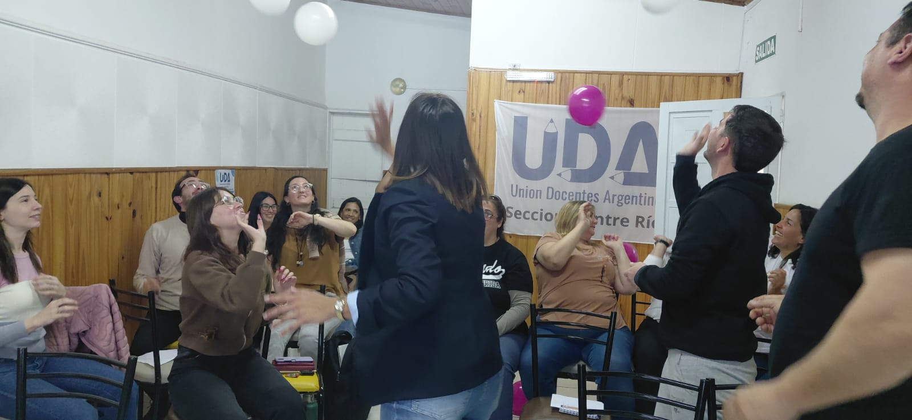
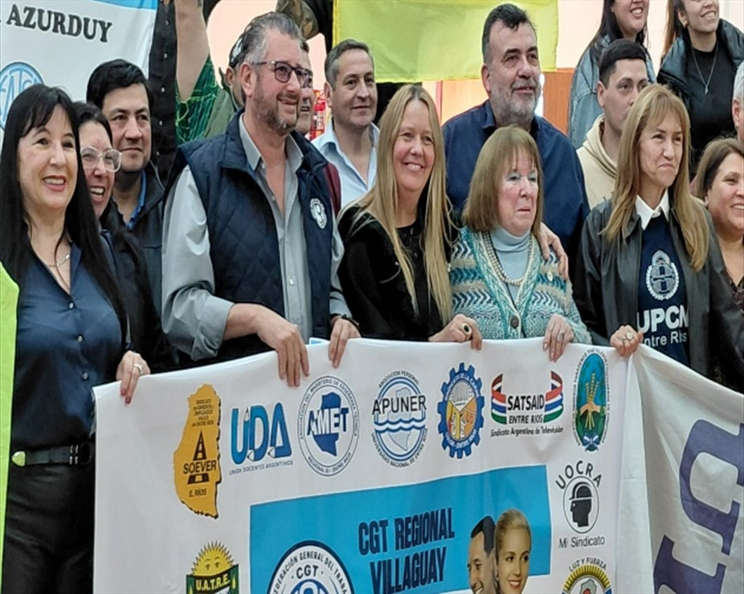

Oposición aprobada y gestión integral
Directora de institución educativa con recorrido previo como secretaria y vicedirectora, uniendo liderazgo pedagógico y administración.
Soy Yolanda María Verbauwede: Magíster y Licenciada en Gestión Educativa, Directora de institución educativa, Técnica Superior Operadora en Psicología Social y Secretaria General de la CGT Regional Villaguay (UDA).

Propuestas diseñadas para personas, mujeres, docentes, equipos directivos, empresas y organizaciones sindicales.
Titulaciones universitarias, tecnicaturas superiores y diplomaturas orientadas a la comprensión de las personas y las organizaciones.
“Creo en la educación como motor de transformación social y en la importancia de escuchar, acompañar y fortalecer vínculos.”Herramientas de Counseling, Educación Emocional, Educación en Valores y Neurociencia aplicadas al trabajo institucional.
Registros de dinámicas grupales, jornadas de formación docente y articulación regional.




Consultas para mentorías individuales o grupales, talleres en instituciones educativas o empresas y formación gremial.